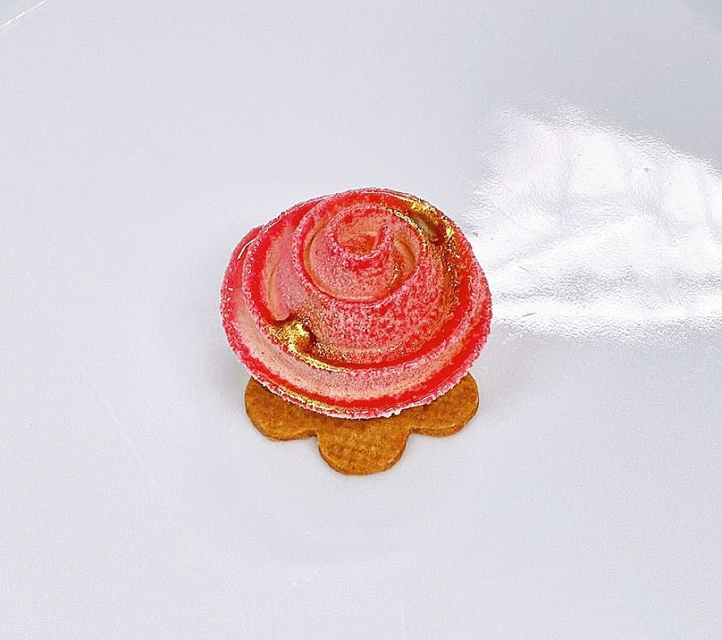
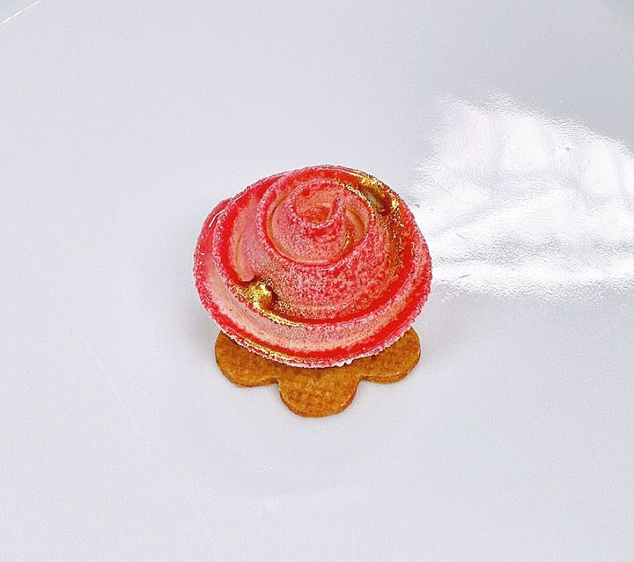
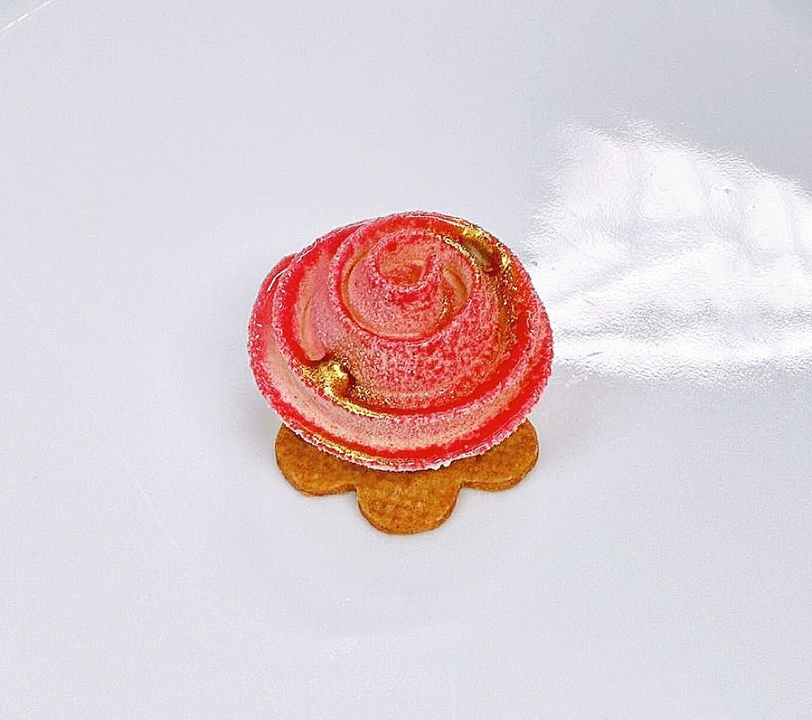
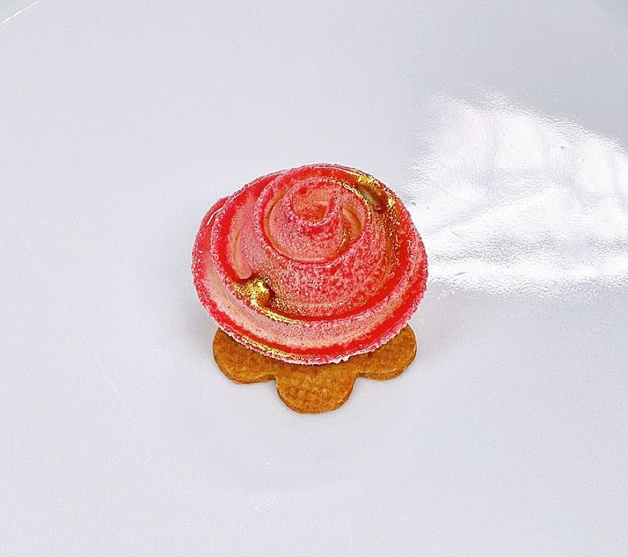

Tartes & Co
 


 

Welcome to Tartes & Co - a pastry business run by a young French pastry chef with a passion for everything sweet. Inspired by the rich culinary traditions of France, each creation is a blend of classic techniques and fresh, locally-sourced ingredients. From flaky, buttery crusts to velvety fillings, every item is crafted to deliver a delightful experience that transports you to the heart of French patisserie. Whether you're craving a traditional tarte tatin, a seasonal fruit tart, or something uniquely crafted, Tartes & Co brings the art of French baking to life right here in Stockholm. Indulge in a little piece of France with every bite.
Welcome to the sweet world of French pastry, crafted with love and artistry. Every dessert is handmade by a passionate French pastry chef whose roots run deep in tradition, creativity, and elegance. From delicate macarons to rich tarts and buttery croissants, each treat is a blend of authentic flavor and refined craftsmanship — made to bring joy to every bite.
Whether you’re planning a cozy gathering, a special celebration, or simply craving something sweet, you’re in the right place. Explore the menu, discover seasonal creations, and place your order with ease. We also welcome custom requests, so don’t hesitate to get in touch — let’s make your dessert dreams come true!